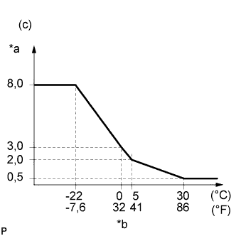
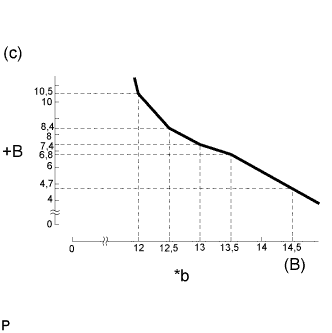
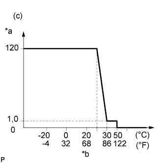

СИСТЕМА ПРЕДПУСКОВОГО ПОДОГРЕВА (для моделей без DPF) > ПРОВЕРКА БЕЗ СНЯТИЯ С АВТОМОБИЛЯ |
| 1. ПРОВЕРЬТЕ ПРОДОЛЖИТЕЛЬНОСТЬ ВКЛЮЧЕНИЯ КОНТРОЛЬНОЙ ЛАМПЫ СВЕЧЕЙ НАКАЛИВАНИЯ |
|  |
Установите замок зажигания в состояние ON (ВКЛ) (IG) и измерьте время, в течение которого контрольная лампа остается включенной.
| *a | Продолжительность включения контрольной лампы свечей накаливания |
| *b | Температура охлаждающей жидкости двигателя |
| 2. ПРОВЕРЬТЕ ПРЕДПУСКОВОЙ ПОДОГРЕВ |
|  |
Включите зажигание (IG) и измерьте время, в течение которого на свечи накаливания подается напряжение аккумуляторной батареи.
| Температура охлаждающей жидкости двигателя | Заданные условия |
| Не менее 40°C (104°F) | 1 с |
| Ниже 40°C (104°F) | См. график*1 (15 с максимум) |
| *a | Продолжительность предпускового подогрева |
| *b | Напряжение аккумуляторной батареи |
| 3. ПРОВЕРЬТЕ ПРОДОЛЖИТЕЛЬНОСТЬ ПОСТНАКАЛА |
|  |
После начала пуска двигателя измерьте время, в течение которого напряжение аккумуляторной батареи подается на контакт GREL ECM.
| *a | Продолжительность постнакала |
| *b | Температура охлаждающей жидкости двигателя |